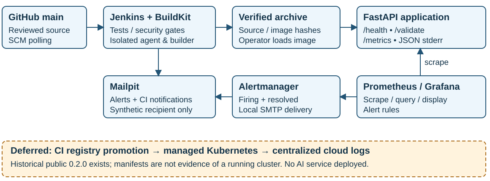

FINSECURE PAY • DESIGN AND ACTUAL EXECUTION • 4 NOVEMBER 2026 UTC

| Component | Responsibility |
|---|---|
| FastAPI / Pydantic | HTTP handling, strict request validation and safe responses. Pure business rules remain in services; instrumentation is separate. |
| uv / pytest / Ruff | Locked dependencies, deterministic unit/API tests and consistent lint/format checks. |
| Jenkins source agent + rootless BuildKit | Checkout main, test, scan, package and export an AMD64 image. No release credentials or host Docker socket. |
| Fixed release worker | Independently verify exact artifacts, publish without rebuilding, check registry identity and perform conditional image-only delivery. |
| Google Kubernetes Engine | Two fixed AMD64 nodes and two application replicas, probes, restricted admission and constrained runtime. |
| Observability | Local Prometheus/Grafana/Alertmanager/Mailpit; real GKE resource metrics and centralized Cloud Logging. |
Python/FastAPI/Pydantic replace the recommended Spring Boot stack; uv and pytest replace Maven and JUnit tooling while preserving the assignment's build, testing and delivery objectives. Jenkins still publishes native JUnit XML results. No database, frontend or additional business service is introduced.
GET /health returns HTTP 200 with {"status":"healthy"}. POST /validate requires five strings: transaction_id, sender_id, recipient_id, amount and currency. Identifiers remain opaque and case-sensitive. Unknown fields and wrong input types are rejected.
| Case | Response |
|---|---|
| Valid synthetic transaction | HTTP 200; {"valid":true,"errors":[]} |
| Business-rule rejection | HTTP 200; valid:false and bounded rejection codes |
| Malformed request/schema | HTTP 422; safe field/type metadata, no stack trace |
Money uses Decimal without floating-point intermediates or rounding. Checks cover positive amounts, configured limits, supported currency, two-digit precision and distinct accounts. Settings are centrally validated at startup. The documented default limit is 10,000; SGD, USD and HKD share the two-decimal rule. The service performs no network or filesystem I/O.
The controller has zero executors. Release jobs are restricted to an exclusive worker; source jobs cannot obtain release credentials. Credential files are borrowed through scoped bindings and private temporary client profiles are cleaned up. Releases are serialized, resume-disabled and bounded by a shared ten-minute budget. Newer source work supersedes the original candidate; there is no silent reselection.
There is no automatic repush, mutation retry, rebase or rollback. Ambiguous outcomes stop for inspection. Approved crane-internal retries remain bounded by the remaining command budget. Registry-side atomic tag immutability is not established.
| Actual execution | Result |
|---|---|
| Normal SCM #39 → delivery #3 | 1,349 tests; gates passed; automatic exact-image publication, rollout and smoke SUCCESS in 104.780 seconds |
| Source #37, deliberate native Replay | 1 failed / 1,348 passed; no package/image artifacts; no downstream delivery |
| Source #38, isolated vulnerable base | 38 HIGH + 2 CRITICAL; image withheld, never published or deployed |
| Explicit controlled rollback | 0.4.0 → known-good 0.3.0 in 33.43 seconds; approved spec, two ready Pods and smoke verified |
| Earlier approved Pod deletion | Replacement/two available replicas observed after 16.1373 seconds; 21/21 health samples passed |
Delivery #1 failed before credentials because Jenkins removed empty environment variables. Delivery #2 published and patched, then failed a public HTTP smoke request. Its result remains FAILURE. Later inspection verified the new runtime and smoke cases before the explicit rollback. A fresh revision then completed #39 → #3. No uncertain write was repeated.
Public readiness now requires ten consecutive healthy observations one second apart, each limited to five seconds and the original deadline. The four strict smoke cases still run once. The precise earlier HTTP exception cause was not retained; a definitive root-cause claim is not made.
Actual Grafana queries and a browser screenshot demonstrate application metrics. Native GKE metrics separately cover CPU/memory for both nodes and Pods. Cloud Logging contains real structured validation events; published evidence includes only approved event fields and timestamps.
A deliberate monitoring-path failure changed the scrape port to 81, not the application. A cloud-scoped alert produced actual FIRING and RESOLVED Mailpit messages; port 80 and healthy scraping were restored. The original hard-coded local rule mismatch was retained and corrected, with native promtool regression checks.
Pods run as UID 10001 with read-only roots, dropped capabilities, probes and resource limits. GKE admission is Restricted. The dedicated deployer has namespace-scoped access; RBAC cannot itself restrict a Deployment patch to only its image field, so the fixed client adds that check. Project-level cluster discovery still exposes metadata. LOW findings remain visible; clean scans are time-bounded observations.
Public HTTP permits synthetic data only. Trial resources need manual credit monitoring; no spending cap or automatic teardown exists. Availability is planned through 18 November with separate cleanup approval on 19 November. Full live cancellation/restart/concurrency fault coverage is not claimed.
The proposed use case helps operators navigate alerts, metrics, logs, deployment history and runbooks. A model could assemble a cited timeline, distinguish verified facts from hypotheses and identify missing evidence. It would not perform remediation or receive arbitrary tool access.
Allowlisted application events, bounded metric observations, verified deployment records and approved runbook excerpts would be collected by a deterministic boundary. Secrets, request bodies, personal information and arbitrary provider diagnostics would be excluded. Model output would be checked against an explicit schema; unsupported citations or invented observations would fail validation.
Expected benefits are reduced navigation time, clearer handoffs and more explicit uncertainty. These benefits have not been measured. Evaluate against human/runbook and deterministic-template baselines using synthetic or reviewed incidents. Assess citation correctness, factual accuracy, unsupported claims, safe abstention, operator usefulness and time saved.
Jenkins, Grafana and Mailpit are loopback-only; the recording and reviewed evidence provide evaluator access to their results. Historical failures, including the earlier scanner/storage incident, remain recorded and are not recast as success.